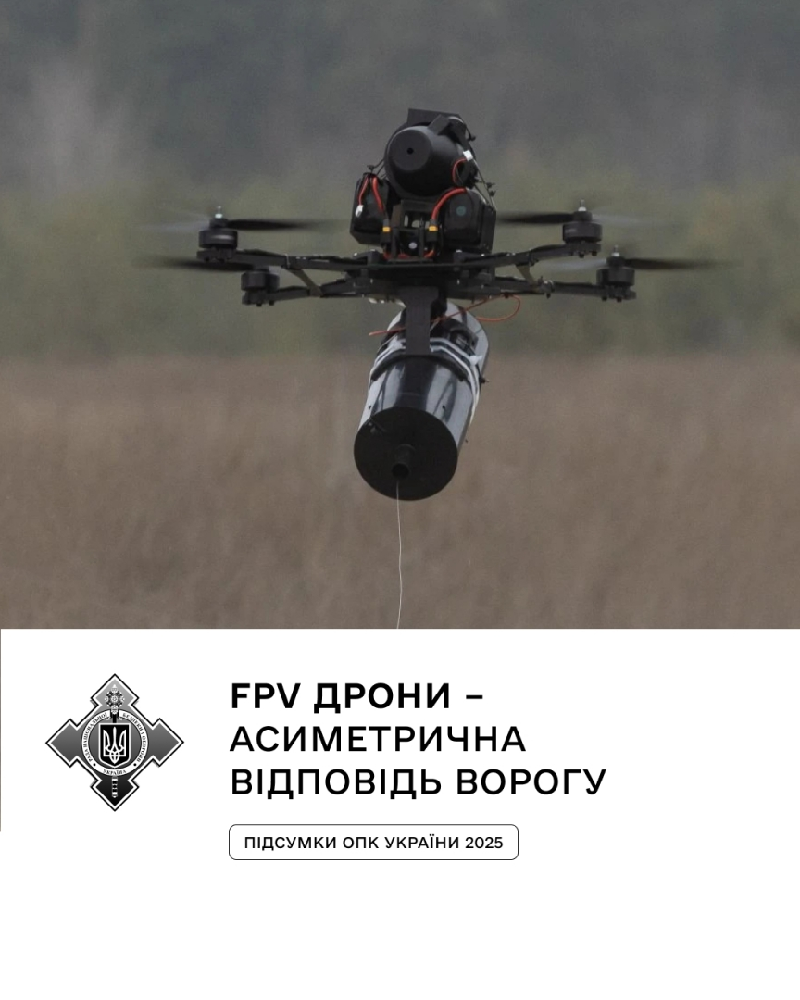

NOTE 12 · UKRAINE
광섬유 FPV 드론의 구조와 운용
무선 조종 드론은 링크가 끊기면 눈과 손을 동시에 잃는다. 강한 재밍이 일상인 전장에서 나온 답 중 하나가 광섬유 FPV다. 드론 뒤에서 가느다란 케이블을 풀어 조종 영상과 명령을 유선으로 주고받는다.

전파를 쓰지 않으니 주파수 재밍과 방향탐지에 강하고, 지형 뒤나 건물 사이에서도 링크 품질을 유지하기 쉽다. 대신 케이블과 릴이 무게를 더하고, 나무나 전선에 걸릴 수 있으며, 비행 경로에도 제약이 생긴다. 자율비행의 미래처럼 보이기보다 오래된 유선 통신을 극단적으로 가볍게 만든 해법에 가깝다.
기체에는 수 km에서 수십 km 길이의 가는 광섬유를 감은 릴과 광전 변환기가 실린다. 케이블은 기체가 당겨내기보다 릴에서 자연스럽게 풀려야 한다. 장력이 커지면 비행을 방해하고, 너무 느슨하게 풀리면 프로펠러나 장애물에 걸릴 수 있어 권선 품질과 릴 배치가 중요하다.
광섬유 링크는 낮은 지연과 안정적인 영상 품질을 제공하지만 기체 중량과 공기저항을 늘린다. 같은 배터리와 모터를 쓸 경우 탑재량이나 비행시간이 줄어든다. 회전이 많은 경로나 숲, 도시 지역에서는 케이블이 끊어질 가능성도 높다. 운용자는 무선 FPV와 다른 접근 경로를 계획해야 한다.
흥미로운 건 대응 방식도 바뀐다는 점이다. 무선 신호가 없으니 RF 탐지기와 재머가 제 역할을 못 한다. 음향·적외선·영상 같은 물리 센서로 찾고, 그물이나 요격 드론으로 막거나 케이블을 끊어야 한다. NATO가 2025년 혁신 과제의 주제를 광섬유 드론 대응으로 잡은 것도 이 빈틈 때문이다.
광섬유 제어는 모든 드론을 대체하지 않는다. 전자전 밀도가 높고 표적 위치가 비교적 명확한 구간에서 장점이 크다. 케이블 가격과 공급, 릴 품질, 지형 제약 때문에 무선 링크, 자율항법과 함께 임무별로 선택되는 방식이다.